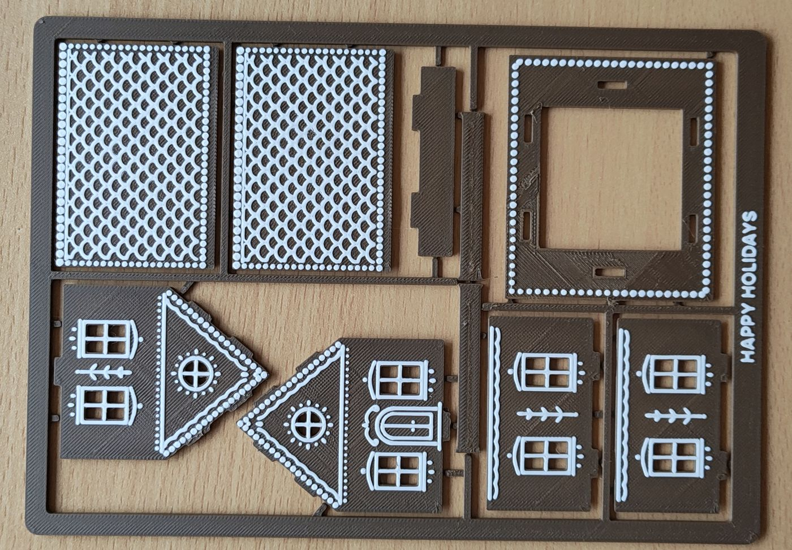
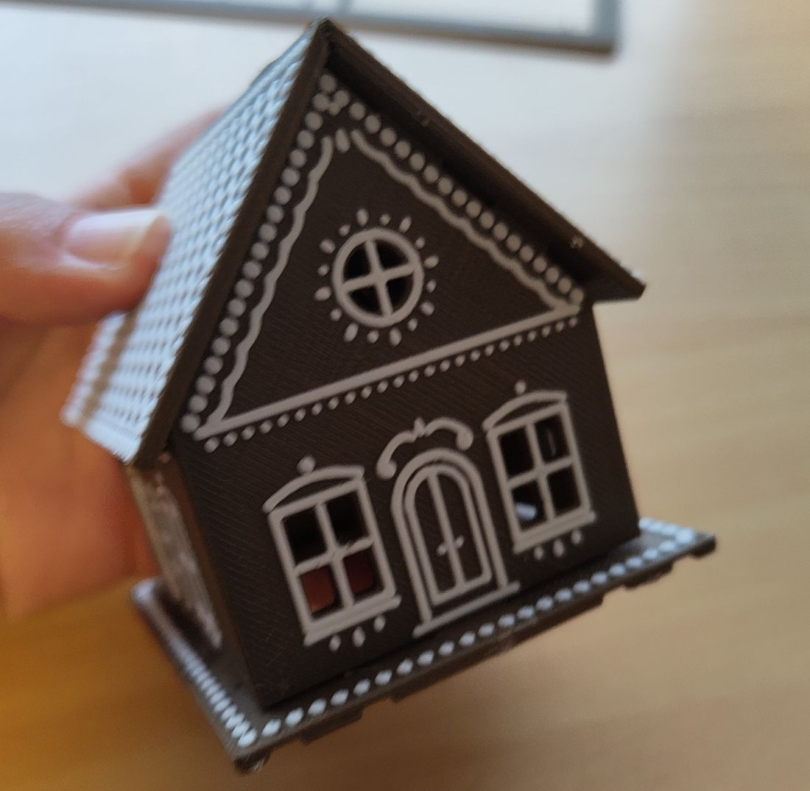

Featured
A gingerbread house you can post in an envelope
A flat A5 card, 2.4 mm thick, printed in walnut wood PLA with ivory icing on the top two layers. You snap the parts off thin gates and slot them together with no glue, and an LED tea light fits inside. It grew from one cottage into a village of six cards.


- Hide the joints. Every slot and pocket sits on the bed side under a 0.6 mm skin, so nothing shows from the front, and nothing needs supports.
- Six versions, each from a real print. v1 was "very cute", but the roof wouldn't stay and the walls weren't connected. v3 turned the card's spacer bars into real structure: tie beams and a ridge board. v4 nested the parts to fit A5. v5 widened the thin parts after "too weak" feedback.
- The roof that sprang back. The tabs stuck out square to the roof slope while the roof came straight down, so it caught. I made the tab sides vertical: the direction a part moves into place matters as much as the tolerance.
- Breakpoints are a detail too. Gates of 1.6 × 1.2 mm needed pliers; a 0.8 × 0.6 mm neck snaps by hand.